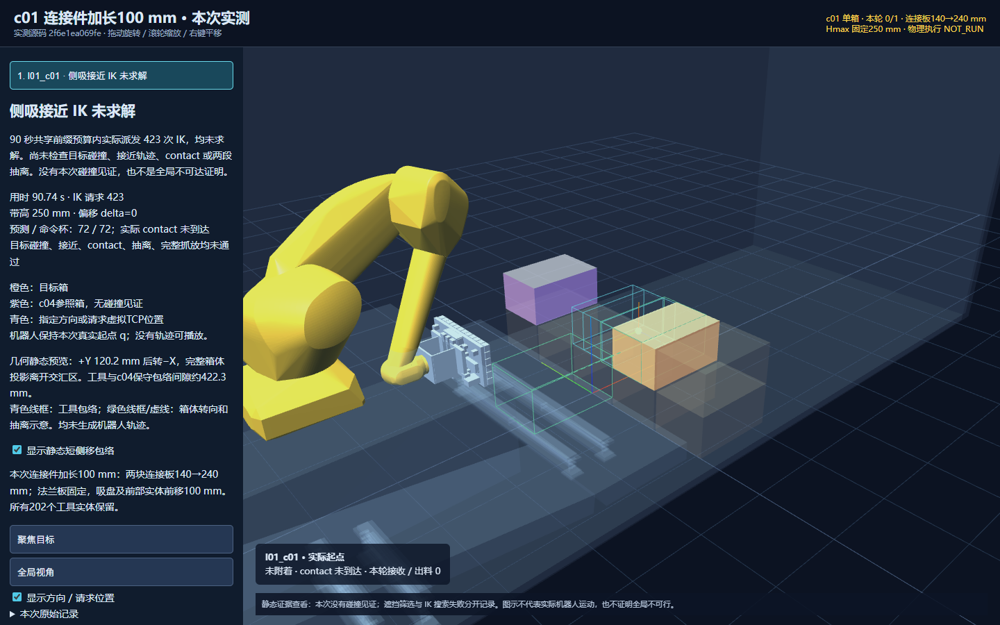

打开加长后的三维查看器 · 加长前查看器 · 离线查看包 · 完整原始记录
| 版本 | 连接板长度 | 实际IK调用 | 数值IK成功 | 完整接受 |
|---|---|---|---|---|
| 未加长短侧移基线 | 140 mm | 438 | 0 | 0/1 |
| 本次加长100 mm | 240 mm | 423 | 0 | 0/1 |

本次正式运行正常，无碰撞见证。初版压缩量集成错误已单列保留并修复，随后实际重跑。
c01：未完成，0/1。连接件已加长100 mm，并在GPU正式生产后端重新规划。 实际派发 delta=0；横带固定Hmax=250 mm，无升降同步。预测有效杯72、命令杯72；实际contact未到达，实际有效杯未知。 保留 ideal_independent_cups 吸力足够的理想假设，不增加承载杯数门槛。 停止阶段：接近点数值IK。423次实际IK请求，0解；没有进入目标碰撞检查、接近轨迹、contact、附着、+Y转向、−X抽离或释放后缀。 本轮改动与实际结果 两块原有140×10×200 mm连接侧板（tool_rigid_11/12）沿法兰+X加长到240×10×200 mm；后端X=10 mm固定，前端150→250 mm。 法兰板tool_rigid_13留在原位；吸盘和其余前端实体前移100 mm。202个工具实体（130刚性、72柔性杯）及稳定归属全部保留。 虚拟TCP 250→350 mm；未压缩杯平面227.5→327.5 mm；名义压缩接触面217.5→317.5 mm。压缩仍为10 mm，虚拟/接触面间距仍为32.5 mm。 这是以原有CAD截面为依据的用户工程加长；原始STEP未篡改。保留20 kg工具工程质量输入，新增结构的质量/质心未重新核定；本次只做运动规划，未执行动力学。 起始q、8箱、历史32箱台账与未加长的短侧移基线完全相同；新worker按加长几何重新建立原生根状态，初态碰撞核验通过。 保留累计−X500 mm/−Y100 mm底座位置、600 mm纵带、260 mm剪叉中心距、250 mm最低带高、l01工具/chassis权限及其他原碰撞/速度/位置/工艺检查。 只重试c01；未续跑c00、c04或l00。 失败的准确含义 正式运行正常退出（exit 0），证据核验PASS。一个固定y+业务面/姿态，423个原生IK调用均返回NATIVE_IK_FAILED、error_code=-6、ik_collision_checked=false。 这些是同一业务目标的数值恢复尝试，不是423个抓法、路径或静态预览。初始q始终不变；所有数值初值均保存在原始requests.json中。 当前root q2=1.251723869760 rad；上臂仰角约18.281505147°。没有成功目标q，也没有目标q2/上臂角可报告。 本次目标碰撞见证为0；不能指认c04、剪叉或其他对象是本轮失败原因，也不能将限时未求解称为全局不可达。 未探索范围：接近运动、contact、实际杯几何、附着、+Y/−X两段、接收、同位姿解除、名义下落、工具分离和IDEAL_RECEIVER_DRAIN均未进入。 本次未更换规划器、seed、初态、抓取方向或固定目标；未重复同一正式失败搜索。 加长前后与全部成本（嵌套计时不能相加） 未加长短侧移：源码819a0ae66833824c6ba365832e1075dd7f10fcc8；438 IK / 0成功；任务90.659034118 s；循环90.832482837 s；原生求解器43.913970742 s。 加长100 mm：源码2f6e1ea069fea3f04578116f32d2d9388869c528；423 IK / 0成功；任务90.741924018 s；循环90.937700905 s；原生求解器42.494327955 s。 本次原生请求总计428=初始化1+FK3+合法起点检查1+IK423；plan请求0；数值IK成功0；目标检查通过0；接近通过0；contact/同步通过0；完整接受0。 沿用seed=71070，任务预算300 s、共享前缀90 s、原0.1 s单次求解切片；无新增固定尝试次数上限。日志保留KDL内部随机重启不受OMPL seed控制的原有标记，不能声称数值轨迹逐位确定。 初版95faacbebe9c9ddf25d9954db0db921b62e41c64：GPU定向测试31通过1失败，4.51 s；发现校验器仍用原227.5 mm基准计算压缩量，初始化被拒绝。正式任务未启动，未消耗一次规划机会。 最小修复2f6e1ea：压缩基准同时加100 mm。GPU32项测试全部通过（4.70 s），含生产Pinocchio/HPP-FCL模型、202实体、板端点、真实接触面检查；随后实际完整入口重跑一次，结果如上。 本地初始31项检查通过（5.36 s）；追加的生产检查在GPU完成。离线浏览器检查PASS，无JavaScript错误，实际q/FK匹配生产后端。 短侧移与c04的几何静态预览 c01中心[0.3,-0.42,0.45] m。完整箱体投影离开交汇区的最小理想+Y距离120 mm；预览保留0.2 mm几何余量，+Y120.2 mm后转−X。 加长后，固定工具姿态的保守包络与c04最小间隙约422.3 mm（未加长522.3 mm）。这支持“工具短侧移不必碰c04”的几何判断。 该数值是同源全部工具实体的静态包络查询，未证明机械臂路径可行，也不是实际已搜索轨迹。青色/绿色线框全部标记静态预览；机器人仅显示本次真实初始q。 没有完成运动，因此不生成虚构运动视频；c01-extension100.html提供实际加长模型与本次失败记录，baseline-channel/c01-channel.html保留加长前证据。 复现与证据 在GPU现有隔离环境运行 reproduce/formal-v1.sh；默认输出必须不存在（保留旧目录，可指定新的输出参数）。 核心入口参数：--mounting-variant x_minus_500_y_minus_100 --continue-l01-selected-routes-from /l01-tool-chassis-v2-20261023/formal-v1 --c01-finite-side-channel --tool-connector-extension-m 0.1。 实测源码：2f6e1ea069fea3f04578116f32d2d9388869c528；远端冻结目录/work-c01-ext100-v2-2f6e1ea；结果/c01-ext100-v2-20261023/formal-v1。 完整命令、打包/部署/分析/几何预览脚本见reproduce/；source-manifest.json和source-receipt.json绑定实测源码与全部原始资产哈希。 formal-v1-raw.tar.xz保存22份完整原始记录及内部SHA256清单，含全部423次IK输入/输出、原生模型、失败及初态；无覆盖旧证据。 baseline-channel/保存819a0ae原失败及其438个IK调用；integration-v1-not-planned/保存95faacb集成错误，与正常规划失败分开。 最终交付提交、远端推送核对值会在交付回复中给出；本报告及全部证据随该提交保存，未将后续展示工具SHA混作实测源码。 状态：历史32箱单列，本轮0/1，现场仍8箱。qualification_status=NOT_EVALUATED；continuous_swept_proof=false；physical_execution=NOT_RUN；execution_ready=false。